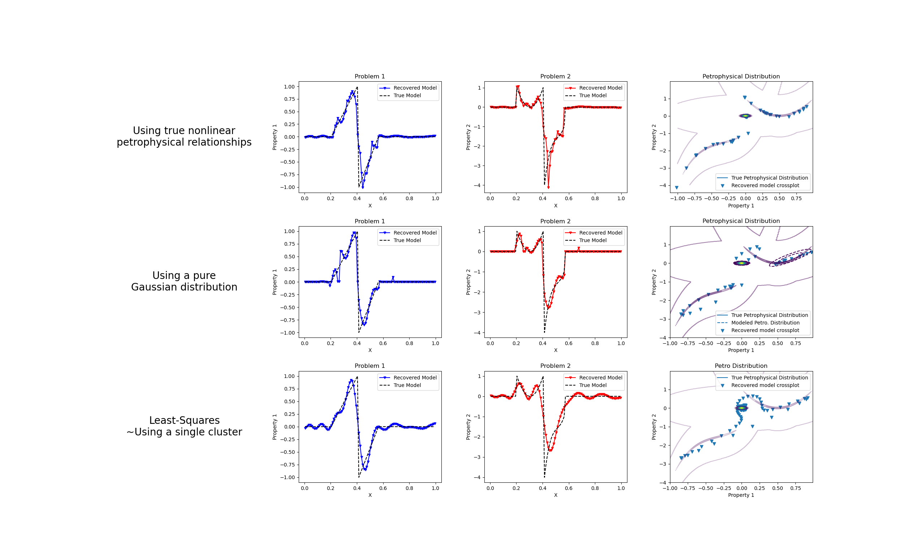

Note
Go to the end to download the full example code.
Petrophysically guided inversion: Joint linear example with nonlinear relationships#
We do a comparison between the classic least-squares inversion and our formulation of a petrophysically guided inversion. We explore it through coupling two linear problems whose respective physical properties are linked by polynomial relationships that change between rock units.

Running inversion with SimPEG v0.24.0
simpeg.InvProblem will set Regularization.reference_model to m0.
simpeg.InvProblem will set Regularization.reference_model to m0.
simpeg.InvProblem will set Regularization.reference_model to m0.
simpeg.InvProblem is setting bfgsH0 to the inverse of the eval2Deriv.
***Done using the default solver Pardiso and no solver_opts.***
Alpha scales: [np.float64(3.3930332801158016), np.float64(0.0), np.float64(3.393010035368193e-06), np.float64(0.0)]
Calculating the scaling parameter.
Scale Multipliers: [0.09830404 0.90169596]
<class 'simpeg.regularization.pgi.PGIsmallness'>
Initial data misfit scales: [0.09830404 0.90169596]
model has any nan: 0
=============================== Projected GNCG ===============================
# beta phi_d phi_m f |proj(x-g)-x| LS Comment
-----------------------------------------------------------------------------
x0 has any nan: 0
0 1.97e+01 3.00e+05 0.00e+00 3.00e+05 1.41e+02 0
geophys. misfits: 1038.8 (target 30.0 [False]); 76.0 (target 30.0 [False]) | smallness misfit: 2889.4 (target: 200.0 [False])
Beta cooling evaluation: progress: [1038.8 76. ]; minimum progress targets: [240000. 240000.]
1 1.97e+01 1.71e+02 4.06e+01 9.70e+02 8.78e+01 0
geophys. misfits: 482.1 (target 30.0 [False]); 19.4 (target 30.0 [True]) | smallness misfit: 1267.1 (target: 200.0 [False])
Beta cooling evaluation: progress: [482.1 19.4]; minimum progress targets: [831. 60.8]
Updating scaling for data misfits by 1.542864257501153
New scales: [0.14398588 0.85601412]
2 1.97e+01 8.61e+01 3.93e+01 8.58e+02 7.45e+01 0 Skip BFGS
geophys. misfits: 280.6 (target 30.0 [False]); 19.4 (target 30.0 [True]) | smallness misfit: 1177.3 (target: 200.0 [False])
Beta cooling evaluation: progress: [280.6 19.4]; minimum progress targets: [385.6 30. ]
Updating scaling for data misfits by 1.545523902684344
New scales: [0.20632709 0.79367291]
3 1.97e+01 7.33e+01 4.04e+01 8.69e+02 7.56e+01 0 Skip BFGS
geophys. misfits: 169.7 (target 30.0 [False]); 19.6 (target 30.0 [True]) | smallness misfit: 1123.0 (target: 200.0 [False])
Beta cooling evaluation: progress: [169.7 19.6]; minimum progress targets: [224.5 30. ]
Updating scaling for data misfits by 1.5326721527714042
New scales: [0.28491796 0.71508204]
4 1.97e+01 6.23e+01 4.14e+01 8.77e+02 7.39e+01 0 Skip BFGS
geophys. misfits: 109.9 (target 30.0 [False]); 20.0 (target 30.0 [True]) | smallness misfit: 1083.7 (target: 200.0 [False])
Beta cooling evaluation: progress: [109.9 20. ]; minimum progress targets: [135.7 30. ]
Updating scaling for data misfits by 1.4990022160051784
New scales: [0.37392936 0.62607064]
5 1.97e+01 5.36e+01 4.21e+01 8.82e+02 7.28e+01 0 Skip BFGS
geophys. misfits: 78.0 (target 30.0 [False]); 20.8 (target 30.0 [True]) | smallness misfit: 1052.5 (target: 200.0 [False])
Beta cooling evaluation: progress: [78. 20.8]; minimum progress targets: [87.9 30. ]
Updating scaling for data misfits by 1.4452288814298735
New scales: [0.46328406 0.53671594]
6 1.97e+01 4.73e+01 4.26e+01 8.85e+02 7.32e+01 0 Skip BFGS
geophys. misfits: 60.9 (target 30.0 [False]); 21.9 (target 30.0 [True]) | smallness misfit: 1024.8 (target: 200.0 [False])
Beta cooling evaluation: progress: [60.9 21.9]; minimum progress targets: [62.4 30. ]
Updating scaling for data misfits by 1.3701322013953605
New scales: [0.54184654 0.45815346]
7 1.97e+01 4.30e+01 4.29e+01 8.88e+02 6.41e+01 0 Skip BFGS
geophys. misfits: 51.6 (target 30.0 [False]); 23.4 (target 30.0 [True]) | smallness misfit: 1000.0 (target: 200.0 [False])
Beta cooling evaluation: progress: [51.6 23.4]; minimum progress targets: [48.7 30. ]
Decreasing beta to counter data misfit decrase plateau.
Updating scaling for data misfits by 1.2827467681318612
New scales: [0.60271304 0.39728696]
8 9.84e+00 4.04e+01 4.31e+01 4.65e+02 8.61e+01 0 Skip BFGS
geophys. misfits: 27.8 (target 30.0 [True]); 18.6 (target 30.0 [True]) | smallness misfit: 1040.9 (target: 200.0 [False])
Beta cooling evaluation: progress: [27.8 18.6]; minimum progress targets: [41.3 30. ]
Warming alpha_pgi to favor clustering: 1.3474233293006108
9 9.84e+00 2.41e+01 4.50e+01 4.67e+02 3.50e+01 0
geophys. misfits: 26.9 (target 30.0 [True]); 20.0 (target 30.0 [True]) | smallness misfit: 965.6 (target: 200.0 [False])
Beta cooling evaluation: progress: [26.9 20. ]; minimum progress targets: [30. 30.]
Warming alpha_pgi to favor clustering: 1.7617936584459497
10 9.84e+00 2.42e+01 4.58e+01 4.75e+02 6.10e+01 0
geophys. misfits: 26.2 (target 30.0 [True]); 21.7 (target 30.0 [True]) | smallness misfit: 897.3 (target: 200.0 [False])
Beta cooling evaluation: progress: [26.2 21.7]; minimum progress targets: [30. 30.]
Warming alpha_pgi to favor clustering: 2.2268929234447525
11 9.84e+00 2.44e+01 4.67e+01 4.84e+02 5.73e+01 0
geophys. misfits: 25.8 (target 30.0 [True]); 23.6 (target 30.0 [True]) | smallness misfit: 833.8 (target: 200.0 [False])
Beta cooling evaluation: progress: [25.8 23.6]; minimum progress targets: [30. 30.]
Warming alpha_pgi to favor clustering: 2.7110735602004663
12 9.84e+00 2.49e+01 4.75e+01 4.93e+02 5.25e+01 0
geophys. misfits: 25.7 (target 30.0 [True]); 26.3 (target 30.0 [True]) | smallness misfit: 778.7 (target: 200.0 [False])
Beta cooling evaluation: progress: [25.7 26.3]; minimum progress targets: [30. 30.]
Warming alpha_pgi to favor clustering: 3.1303852345236454
13 9.84e+00 2.59e+01 4.81e+01 4.99e+02 7.40e+01 0
geophys. misfits: 25.5 (target 30.0 [True]); 28.3 (target 30.0 [True]) | smallness misfit: 736.3 (target: 200.0 [False])
Beta cooling evaluation: progress: [25.5 28.3]; minimum progress targets: [30. 30.]
Warming alpha_pgi to favor clustering: 3.5031410778898007
14 9.84e+00 2.66e+01 4.87e+01 5.05e+02 6.58e+01 0 Skip BFGS
geophys. misfits: 25.5 (target 30.0 [True]); 30.3 (target 30.0 [False]) | smallness misfit: 701.7 (target: 200.0 [False])
Beta cooling evaluation: progress: [25.5 30.3]; minimum progress targets: [30. 30.]
Decreasing beta to counter data misfit increase.
Updating scaling for data misfits by 1.1745507138812044
New scales: [0.56362733 0.43637267]
15 4.92e+00 2.76e+01 4.86e+01 2.66e+02 8.76e+01 0 Skip BFGS
geophys. misfits: 24.5 (target 30.0 [True]); 21.5 (target 30.0 [True]) | smallness misfit: 782.1 (target: 200.0 [False])
Beta cooling evaluation: progress: [24.5 21.5]; minimum progress targets: [30. 30.]
Warming alpha_pgi to favor clustering: 4.583918506505344
16 4.92e+00 2.32e+01 5.10e+01 2.74e+02 8.17e+01 0
geophys. misfits: 23.2 (target 30.0 [True]); 23.4 (target 30.0 [True]) | smallness misfit: 680.5 (target: 200.0 [False])
Beta cooling evaluation: progress: [23.2 23.4]; minimum progress targets: [30. 30.]
Warming alpha_pgi to favor clustering: 5.902043556776766
17 4.92e+00 2.33e+01 5.28e+01 2.83e+02 6.42e+01 0
geophys. misfits: 22.6 (target 30.0 [True]); 25.0 (target 30.0 [True]) | smallness misfit: 613.2 (target: 200.0 [False])
Beta cooling evaluation: progress: [22.6 25. ]; minimum progress targets: [30. 30.]
Warming alpha_pgi to favor clustering: 7.4590096431908055
18 4.92e+00 2.36e+01 5.47e+01 2.93e+02 6.45e+01 0 Skip BFGS
geophys. misfits: 22.4 (target 30.0 [True]); 26.6 (target 30.0 [True]) | smallness misfit: 546.5 (target: 200.0 [False])
Beta cooling evaluation: progress: [22.4 26.6]; minimum progress targets: [30. 30.]
Warming alpha_pgi to favor clustering: 9.20378102162086
19 4.92e+00 2.42e+01 5.66e+01 3.03e+02 6.84e+01 0
geophys. misfits: 22.5 (target 30.0 [True]); 26.8 (target 30.0 [True]) | smallness misfit: 513.1 (target: 200.0 [False])
Beta cooling evaluation: progress: [22.5 26.8]; minimum progress targets: [30. 30.]
Warming alpha_pgi to favor clustering: 11.279723632472251
20 4.92e+00 2.44e+01 5.89e+01 3.14e+02 7.75e+01 0
geophys. misfits: 22.5 (target 30.0 [True]); 31.9 (target 30.0 [False]) | smallness misfit: 442.6 (target: 200.0 [False])
Beta cooling evaluation: progress: [22.5 31.9]; minimum progress targets: [30. 30.]
Decreasing beta to counter data misfit increase.
Updating scaling for data misfits by 1.3340564234350483
New scales: [0.4919188 0.5080812]
21 2.46e+00 2.72e+01 5.82e+01 1.70e+02 9.05e+01 0
geophys. misfits: 23.1 (target 30.0 [True]); 21.7 (target 30.0 [True]) | smallness misfit: 494.8 (target: 200.0 [False])
Beta cooling evaluation: progress: [23.1 21.7]; minimum progress targets: [30. 30.]
Warming alpha_pgi to favor clustering: 15.14131249550492
22 2.46e+00 2.24e+01 6.37e+01 1.79e+02 8.25e+01 0
geophys. misfits: 21.8 (target 30.0 [True]); 20.0 (target 30.0 [True]) | smallness misfit: 453.7 (target: 200.0 [False])
Beta cooling evaluation: progress: [21.8 20. ]; minimum progress targets: [30. 30.]
Warming alpha_pgi to favor clustering: 21.761756664138293
23 2.46e+00 2.09e+01 7.06e+01 1.95e+02 9.79e+01 0
geophys. misfits: 22.1 (target 30.0 [True]); 18.5 (target 30.0 [True]) | smallness misfit: 411.8 (target: 200.0 [False])
Beta cooling evaluation: progress: [22.1 18.5]; minimum progress targets: [30. 30.]
Warming alpha_pgi to favor clustering: 32.347078306011625
24 2.46e+00 2.03e+01 8.01e+01 2.17e+02 1.06e+02 0
geophys. misfits: 22.2 (target 30.0 [True]); 16.8 (target 30.0 [True]) | smallness misfit: 365.9 (target: 200.0 [False])
Beta cooling evaluation: progress: [22.2 16.8]; minimum progress targets: [30. 30.]
Warming alpha_pgi to favor clustering: 50.63015772579173
25 2.46e+00 1.95e+01 9.44e+01 2.52e+02 1.16e+02 0
geophys. misfits: 21.1 (target 30.0 [True]); 16.6 (target 30.0 [True]) | smallness misfit: 330.0 (target: 200.0 [False])
Beta cooling evaluation: progress: [21.1 16.6]; minimum progress targets: [30. 30.]
Warming alpha_pgi to favor clustering: 81.7968040386685
26 2.46e+00 1.88e+01 1.17e+02 3.06e+02 1.26e+02 0
geophys. misfits: 21.6 (target 30.0 [True]); 16.4 (target 30.0 [True]) | smallness misfit: 306.2 (target: 200.0 [False])
Beta cooling evaluation: progress: [21.6 16.4]; minimum progress targets: [30. 30.]
Warming alpha_pgi to favor clustering: 131.86757195462746
27 2.46e+00 1.89e+01 1.48e+02 3.84e+02 1.30e+02 1
geophys. misfits: 22.6 (target 30.0 [True]); 17.1 (target 30.0 [True]) | smallness misfit: 285.0 (target: 200.0 [False])
Beta cooling evaluation: progress: [22.6 17.1]; minimum progress targets: [30. 30.]
Warming alpha_pgi to favor clustering: 203.5979904845571
28 2.46e+00 1.98e+01 1.91e+02 4.89e+02 1.33e+02 1
geophys. misfits: 22.9 (target 30.0 [True]); 18.4 (target 30.0 [True]) | smallness misfit: 264.5 (target: 200.0 [False])
Beta cooling evaluation: progress: [22.9 18.4]; minimum progress targets: [30. 30.]
Warming alpha_pgi to favor clustering: 299.00470764632524
29 2.46e+00 2.06e+01 2.42e+02 6.16e+02 1.37e+02 1
geophys. misfits: 23.6 (target 30.0 [True]); 19.1 (target 30.0 [True]) | smallness misfit: 253.6 (target: 200.0 [False])
Beta cooling evaluation: progress: [23.6 19.1]; minimum progress targets: [30. 30.]
Warming alpha_pgi to favor clustering: 424.7766316844635
30 2.46e+00 2.13e+01 3.08e+02 7.79e+02 1.40e+02 2
geophys. misfits: 23.4 (target 30.0 [True]); 18.9 (target 30.0 [True]) | smallness misfit: 245.1 (target: 200.0 [False])
Beta cooling evaluation: progress: [23.4 18.9]; minimum progress targets: [30. 30.]
Warming alpha_pgi to favor clustering: 609.935723713221
31 2.46e+00 2.11e+01 4.03e+02 1.01e+03 1.41e+02 2
geophys. misfits: 24.6 (target 30.0 [True]); 18.0 (target 30.0 [True]) | smallness misfit: 236.2 (target: 200.0 [False])
Beta cooling evaluation: progress: [24.6 18. ]; minimum progress targets: [30. 30.]
Warming alpha_pgi to favor clustering: 878.858284581893
32 2.46e+00 2.13e+01 5.37e+02 1.34e+03 1.41e+02 2
geophys. misfits: 26.3 (target 30.0 [True]); 17.5 (target 30.0 [True]) | smallness misfit: 233.1 (target: 200.0 [False])
Beta cooling evaluation: progress: [26.3 17.5]; minimum progress targets: [30. 30.]
Warming alpha_pgi to favor clustering: 1254.922330200458
33 2.46e+00 2.18e+01 7.26e+02 1.81e+03 1.42e+02 2
geophys. misfits: 27.8 (target 30.0 [True]); 18.4 (target 30.0 [True]) | smallness misfit: 227.2 (target: 200.0 [False])
Beta cooling evaluation: progress: [27.8 18.4]; minimum progress targets: [30. 30.]
Warming alpha_pgi to favor clustering: 1700.4518470122239
34 2.46e+00 2.30e+01 9.43e+02 2.34e+03 1.42e+02 3
geophys. misfits: 27.5 (target 30.0 [True]); 19.3 (target 30.0 [True]) | smallness misfit: 228.1 (target: 200.0 [False])
Beta cooling evaluation: progress: [27.5 19.3]; minimum progress targets: [30. 30.]
Warming alpha_pgi to favor clustering: 2249.388236870395
35 2.46e+00 2.33e+01 1.22e+03 3.03e+03 1.42e+02 3
geophys. misfits: 28.0 (target 30.0 [True]); 21.7 (target 30.0 [True]) | smallness misfit: 226.7 (target: 200.0 [False])
Beta cooling evaluation: progress: [28. 21.7]; minimum progress targets: [30. 30.]
Warming alpha_pgi to favor clustering: 2759.431162647645
36 2.46e+00 2.48e+01 1.48e+03 3.67e+03 1.42e+02 2
geophys. misfits: 29.8 (target 30.0 [True]); 22.8 (target 30.0 [True]) | smallness misfit: 221.2 (target: 200.0 [False])
Beta cooling evaluation: progress: [29.8 22.8]; minimum progress targets: [30. 30.]
Warming alpha_pgi to favor clustering: 3209.26457366378
37 2.46e+00 2.62e+01 1.67e+03 4.13e+03 1.42e+02 3
geophys. misfits: 31.7 (target 30.0 [False]); 22.5 (target 30.0 [True]) | smallness misfit: 220.2 (target: 200.0 [False])
Beta cooling evaluation: progress: [31.7 22.5]; minimum progress targets: [30. 30.]
Decreasing beta to counter data misfit increase.
Updating scaling for data misfits by 1.3332467801184529
New scales: [0.56347801 0.43652199]
38 1.23e+00 2.77e+01 1.66e+03 2.07e+03 1.41e+02 3
geophys. misfits: 30.7 (target 30.0 [False]); 23.0 (target 30.0 [True]) | smallness misfit: 218.9 (target: 200.0 [False])
Beta cooling evaluation: progress: [30.7 23. ]; minimum progress targets: [30. 30.]
Decreasing beta to counter data misfit increase.
Updating scaling for data misfits by 1.3019398989956255
New scales: [0.6269478 0.3730522]
39 6.15e-01 2.78e+01 1.65e+03 1.04e+03 1.41e+02 3
geophys. misfits: 28.5 (target 30.0 [True]); 24.8 (target 30.0 [True]) | smallness misfit: 216.6 (target: 200.0 [False])
Beta cooling evaluation: progress: [28.5 24.8]; minimum progress targets: [30. 30.]
Warming alpha_pgi to favor clustering: 3624.556375703598
40 6.15e-01 2.72e+01 1.84e+03 1.16e+03 1.41e+02 3 Skip BFGS
geophys. misfits: 25.5 (target 30.0 [True]); 26.6 (target 30.0 [True]) | smallness misfit: 215.7 (target: 200.0 [False])
Beta cooling evaluation: progress: [25.5 26.6]; minimum progress targets: [30. 30.]
Warming alpha_pgi to favor clustering: 4177.586708980404
41 6.15e-01 2.59e+01 2.11e+03 1.32e+03 1.41e+02 2
geophys. misfits: 24.8 (target 30.0 [True]); 23.9 (target 30.0 [True]) | smallness misfit: 215.2 (target: 200.0 [False])
Beta cooling evaluation: progress: [24.8 23.9]; minimum progress targets: [30. 30.]
Warming alpha_pgi to favor clustering: 5142.747920818263
42 6.15e-01 2.45e+01 2.57e+03 1.61e+03 1.41e+02 3
geophys. misfits: 24.5 (target 30.0 [True]); 25.4 (target 30.0 [True]) | smallness misfit: 214.7 (target: 200.0 [False])
Beta cooling evaluation: progress: [24.5 25.4]; minimum progress targets: [30. 30.]
Warming alpha_pgi to favor clustering: 6184.648134963652
43 6.15e-01 2.48e+01 3.07e+03 1.92e+03 1.41e+02 3
geophys. misfits: 24.6 (target 30.0 [True]); 24.8 (target 30.0 [True]) | smallness misfit: 214.2 (target: 200.0 [False])
Beta cooling evaluation: progress: [24.6 24.8]; minimum progress targets: [30. 30.]
Warming alpha_pgi to favor clustering: 7519.786185307009
44 6.15e-01 2.46e+01 3.71e+03 2.31e+03 1.42e+02 4
geophys. misfits: 25.5 (target 30.0 [True]); 25.6 (target 30.0 [True]) | smallness misfit: 213.5 (target: 200.0 [False])
Beta cooling evaluation: progress: [25.5 25.6]; minimum progress targets: [30. 30.]
Warming alpha_pgi to favor clustering: 8842.37549702421
45 6.15e-01 2.55e+01 4.34e+03 2.70e+03 1.42e+02 3
geophys. misfits: 24.8 (target 30.0 [True]); 24.2 (target 30.0 [True]) | smallness misfit: 213.2 (target: 200.0 [False])
Beta cooling evaluation: progress: [24.8 24.2]; minimum progress targets: [30. 30.]
Warming alpha_pgi to favor clustering: 10817.798770716465
46 6.15e-01 2.46e+01 5.29e+03 3.28e+03 1.42e+02 3
geophys. misfits: 25.2 (target 30.0 [True]); 25.3 (target 30.0 [True]) | smallness misfit: 213.1 (target: 200.0 [False])
Beta cooling evaluation: progress: [25.2 25.3]; minimum progress targets: [30. 30.]
Warming alpha_pgi to favor clustering: 12854.30694513111
47 6.15e-01 2.52e+01 6.27e+03 3.88e+03 1.42e+02 3
geophys. misfits: 23.9 (target 30.0 [True]); 26.5 (target 30.0 [True]) | smallness misfit: 212.8 (target: 200.0 [False])
Beta cooling evaluation: progress: [23.9 26.5]; minimum progress targets: [30. 30.]
Warming alpha_pgi to favor clustering: 15326.718588956475
48 6.15e-01 2.49e+01 7.45e+03 4.61e+03 1.42e+02 3
geophys. misfits: 23.8 (target 30.0 [True]); 26.9 (target 30.0 [True]) | smallness misfit: 212.6 (target: 200.0 [False])
Beta cooling evaluation: progress: [23.8 26.9]; minimum progress targets: [30. 30.]
Warming alpha_pgi to favor clustering: 18218.95650565163
49 6.15e-01 2.49e+01 8.83e+03 5.46e+03 1.42e+02 4
geophys. misfits: 24.0 (target 30.0 [True]); 29.3 (target 30.0 [True]) | smallness misfit: 212.0 (target: 200.0 [False])
Beta cooling evaluation: progress: [24. 29.3]; minimum progress targets: [30. 30.]
Warming alpha_pgi to favor clustering: 20717.446008721592
50 6.15e-01 2.60e+01 1.00e+04 6.18e+03 1.42e+02 4
------------------------- STOP! -------------------------
1 : |fc-fOld| = 7.2511e+02 <= tolF*(1+|f0|) = 3.0000e+04
0 : |xc-x_last| = 1.0313e-01 <= tolX*(1+|x0|) = 1.0000e-06
0 : |proj(x-g)-x| = 1.4189e+02 <= tolG = 1.0000e-01
0 : |proj(x-g)-x| = 1.4189e+02 <= 1e3*eps = 1.0000e-02
1 : maxIter = 50 <= iter = 50
------------------------- DONE! -------------------------
Running inversion with SimPEG v0.24.0
simpeg.InvProblem will set Regularization.reference_model to m0.
simpeg.InvProblem will set Regularization.reference_model to m0.
simpeg.InvProblem will set Regularization.reference_model to m0.
simpeg.InvProblem is setting bfgsH0 to the inverse of the eval2Deriv.
***Done using the default solver Pardiso and no solver_opts.***
Alpha scales: [np.float64(0.0003490905507283419), np.float64(0.0), np.float64(3.5015642254183286e-06), np.float64(0.0)]
Calculating the scaling parameter.
Scale Multipliers: [0.09830404 0.90169596]
<class 'simpeg.regularization.pgi.PGIsmallness'>
Initial data misfit scales: [0.09830404 0.90169596]
model has any nan: 0
=============================== Projected GNCG ===============================
# beta phi_d phi_m f |proj(x-g)-x| LS Comment
-----------------------------------------------------------------------------
x0 has any nan: 0
0 1.95e+03 3.00e+05 0.00e+00 3.00e+05 1.41e+02 0
geophys. misfits: 87554.3 (target 30.0 [False]); 63388.0 (target 30.0 [False]) | smallness misfit: 273.2 (target: 200.0 [False])
Beta cooling evaluation: progress: [87554.3 63388. ]; minimum progress targets: [240000. 240000.]
1 1.95e+03 6.58e+04 6.59e-01 6.70e+04 9.27e+01 0
geophys. misfits: 625.3 (target 30.0 [False]); 25.5 (target 30.0 [True]) | smallness misfit: 118.1 (target: 200.0 [True])
Beta cooling evaluation: progress: [625.3 25.5]; minimum progress targets: [70043.5 50710.4]
Updating scaling for data misfits by 1.176086913893553
New scales: [0.11364686 0.88635314]
2 1.95e+03 9.37e+01 3.23e-01 7.23e+02 9.00e+01 0 Skip BFGS
geophys. misfits: 109.6 (target 30.0 [False]); 22.7 (target 30.0 [True]) | smallness misfit: 50.9 (target: 200.0 [True])
Beta cooling evaluation: progress: [109.6 22.7]; minimum progress targets: [500.3 30. ]
Updating scaling for data misfits by 1.3226154488839743
New scales: [0.14499497 0.85500503]
3 1.95e+03 3.53e+01 1.38e-01 3.04e+02 8.30e+01 0 Skip BFGS
geophys. misfits: 77.2 (target 30.0 [False]); 22.7 (target 30.0 [True]) | smallness misfit: 47.9 (target: 200.0 [True])
Beta cooling evaluation: progress: [77.2 22.7]; minimum progress targets: [87.7 30. ]
Updating scaling for data misfits by 1.3204119186366317
New scales: [0.18295341 0.81704659]
4 1.95e+03 3.27e+01 1.30e-01 2.86e+02 6.25e+01 0
geophys. misfits: 58.9 (target 30.0 [False]); 23.0 (target 30.0 [True]) | smallness misfit: 48.5 (target: 200.0 [True])
Beta cooling evaluation: progress: [58.9 23. ]; minimum progress targets: [61.8 30. ]
Updating scaling for data misfits by 1.3022298808875785
New scales: [0.22576401 0.77423599]
5 1.95e+03 3.11e+01 1.31e-01 2.87e+02 6.21e+01 0 Skip BFGS
geophys. misfits: 46.5 (target 30.0 [False]); 23.8 (target 30.0 [True]) | smallness misfit: 48.9 (target: 200.0 [True])
Beta cooling evaluation: progress: [46.5 23.8]; minimum progress targets: [47.2 30. ]
Updating scaling for data misfits by 1.259272638515109
New scales: [0.26857741 0.73142259]
6 1.95e+03 2.99e+01 1.32e-01 2.88e+02 6.18e+01 0
geophys. misfits: 39.3 (target 30.0 [False]); 24.5 (target 30.0 [True]) | smallness misfit: 49.2 (target: 200.0 [True])
Beta cooling evaluation: progress: [39.3 24.5]; minimum progress targets: [37.2 30. ]
Decreasing beta to counter data misfit decrase plateau.
Updating scaling for data misfits by 1.2261965505921257
New scales: [0.3104674 0.6895326]
7 9.75e+02 2.91e+01 1.33e-01 1.59e+02 9.73e+01 0 Skip BFGS
geophys. misfits: 24.4 (target 30.0 [True]); 20.5 (target 30.0 [True]) | smallness misfit: 51.5 (target: 200.0 [True])
All targets have been reached
Beta cooling evaluation: progress: [24.4 20.5]; minimum progress targets: [31.4 30. ]
Warming alpha_pgi to favor clustering: 1.345210343214991
------------------------- STOP! -------------------------
1 : |fc-fOld| = 0.0000e+00 <= tolF*(1+|f0|) = 3.0000e+04
0 : |xc-x_last| = 1.7439e-01 <= tolX*(1+|x0|) = 1.0000e-06
0 : |proj(x-g)-x| = 9.7277e+01 <= tolG = 1.0000e-01
0 : |proj(x-g)-x| = 9.7277e+01 <= 1e3*eps = 1.0000e-02
0 : maxIter = 50 <= iter = 8
------------------------- DONE! -------------------------
Running inversion with SimPEG v0.24.0
simpeg.InvProblem will set Regularization.reference_model to m0.
simpeg.InvProblem will set Regularization.reference_model to m0.
simpeg.InvProblem is setting bfgsH0 to the inverse of the eval2Deriv.
***Done using the default solver Pardiso and no solver_opts.***
Alpha scales: [np.float64(3.509394605264428e-05), np.float64(0.0), np.float64(3.508956242744844e-05), np.float64(0.0)]
Calculating the scaling parameter.
Scale Multipliers: [0.09830404 0.90169596]
/home/vsts/work/1/s/simpeg/directives/directives.py:339: UserWarning:
There is no PGI regularization. Smallness target is turned off (TriggerSmall flag)
Initial data misfit scales: [0.09830404 0.90169596]
model has any nan: 0
=============================== Projected GNCG ===============================
# beta phi_d phi_m f |proj(x-g)-x| LS Comment
-----------------------------------------------------------------------------
x0 has any nan: 0
0 1.04e+06 3.00e+05 0.00e+00 3.00e+05 1.41e+02 0
geophys. misfits: 55361.2 (target 30.0 [False]); 36060.0 (target 30.0 [False])
1 2.08e+05 3.80e+04 4.28e-02 4.68e+04 1.38e+02 0
geophys. misfits: 8089.2 (target 30.0 [False]); 3918.6 (target 30.0 [False])
2 4.16e+04 4.33e+03 1.07e-01 8.78e+03 1.30e+02 0 Skip BFGS
geophys. misfits: 539.1 (target 30.0 [False]); 247.9 (target 30.0 [False])
3 8.31e+03 2.77e+02 1.42e-01 1.45e+03 1.03e+02 0 Skip BFGS
geophys. misfits: 44.1 (target 30.0 [False]); 29.3 (target 30.0 [True])
Updating scaling for data misfits by 1.0238544792944275
New scales: [0.10041356 0.89958644]
4 1.66e+03 3.08e+01 1.52e-01 2.83e+02 8.95e+01 0 Skip BFGS
geophys. misfits: 21.7 (target 30.0 [True]); 14.0 (target 30.0 [True])
All targets have been reached
------------------------- STOP! -------------------------
1 : |fc-fOld| = 0.0000e+00 <= tolF*(1+|f0|) = 3.0000e+04
0 : |xc-x_last| = 4.6124e-01 <= tolX*(1+|x0|) = 1.0000e-06
0 : |proj(x-g)-x| = 8.9479e+01 <= tolG = 1.0000e-01
0 : |proj(x-g)-x| = 8.9479e+01 <= 1e3*eps = 1.0000e-02
0 : maxIter = 50 <= iter = 5
------------------------- DONE! -------------------------
/home/vsts/work/1/s/examples/10-pgi/plot_inv_1_PGI_Linear_1D_joint_WithRelationships.py:302: UserWarning:
marker is redundantly defined by the 'marker' keyword argument and the fmt string "b.-" (-> marker='.'). The keyword argument will take precedence.
/home/vsts/work/1/s/examples/10-pgi/plot_inv_1_PGI_Linear_1D_joint_WithRelationships.py:309: UserWarning:
marker is redundantly defined by the 'marker' keyword argument and the fmt string "r.-" (-> marker='.'). The keyword argument will take precedence.
/home/vsts/work/1/s/examples/10-pgi/plot_inv_1_PGI_Linear_1D_joint_WithRelationships.py:353: UserWarning:
marker is redundantly defined by the 'marker' keyword argument and the fmt string "b.-" (-> marker='.'). The keyword argument will take precedence.
/home/vsts/work/1/s/examples/10-pgi/plot_inv_1_PGI_Linear_1D_joint_WithRelationships.py:360: UserWarning:
marker is redundantly defined by the 'marker' keyword argument and the fmt string "r.-" (-> marker='.'). The keyword argument will take precedence.
/home/vsts/work/1/s/examples/10-pgi/plot_inv_1_PGI_Linear_1D_joint_WithRelationships.py:367: UserWarning:
The following kwargs were not used by contour: 'label'
/home/vsts/work/1/s/examples/10-pgi/plot_inv_1_PGI_Linear_1D_joint_WithRelationships.py:412: UserWarning:
marker is redundantly defined by the 'marker' keyword argument and the fmt string "b.-" (-> marker='.'). The keyword argument will take precedence.
/home/vsts/work/1/s/examples/10-pgi/plot_inv_1_PGI_Linear_1D_joint_WithRelationships.py:419: UserWarning:
marker is redundantly defined by the 'marker' keyword argument and the fmt string "r.-" (-> marker='.'). The keyword argument will take precedence.
import discretize as Mesh
import matplotlib.pyplot as plt
import matplotlib.lines as mlines
import numpy as np
from simpeg import (
data_misfit,
directives,
inverse_problem,
inversion,
maps,
optimization,
regularization,
simulation,
utils,
)
# Random seed for reproductibility
np.random.seed(1)
# Mesh
N = 100
mesh = Mesh.TensorMesh([N])
# Survey design parameters
nk = 30
jk = np.linspace(1.0, 59.0, nk)
p = -0.25
q = 0.25
# Physics
def g(k):
return np.exp(p * jk[k] * mesh.cell_centers_x) * np.cos(
np.pi * q * jk[k] * mesh.cell_centers_x
)
G = np.empty((nk, mesh.nC))
for i in range(nk):
G[i, :] = g(i)
m0 = np.zeros(mesh.nC)
m0[20:41] = np.linspace(0.0, 1.0, 21)
m0[41:57] = np.linspace(-1, 0.0, 16)
poly0 = maps.PolynomialPetroClusterMap(coeffyx=np.r_[0.0, -4.0, 4.0])
poly1 = maps.PolynomialPetroClusterMap(coeffyx=np.r_[-0.0, 3.0, 6.0, 6.0])
poly0_inverse = maps.PolynomialPetroClusterMap(coeffyx=-np.r_[0.0, -4.0, 4.0])
poly1_inverse = maps.PolynomialPetroClusterMap(coeffyx=-np.r_[0.0, 3.0, 6.0, 6.0])
cluster_mapping = [maps.IdentityMap(), poly0_inverse, poly1_inverse]
m1 = np.zeros(100)
m1[20:41] = 1.0 + (poly0 * np.vstack([m0[20:41], m1[20:41]]).T)[:, 1]
m1[41:57] = -1.0 + (poly1 * np.vstack([m0[41:57], m1[41:57]]).T)[:, 1]
model2d = np.vstack([m0, m1]).T
m = utils.mkvc(model2d)
clfmapping = utils.GaussianMixtureWithNonlinearRelationships(
mesh=mesh,
n_components=3,
covariance_type="full",
tol=1e-8,
reg_covar=1e-3,
max_iter=1000,
n_init=100,
init_params="kmeans",
random_state=None,
warm_start=False,
means_init=np.array(
[
[0, 0],
[m0[20:41].mean(), m1[20:41].mean()],
[m0[41:57].mean(), m1[41:57].mean()],
]
),
verbose=0,
verbose_interval=10,
cluster_mapping=cluster_mapping,
)
clfmapping = clfmapping.fit(model2d)
clfnomapping = utils.WeightedGaussianMixture(
mesh=mesh,
n_components=3,
covariance_type="full",
tol=1e-8,
reg_covar=1e-3,
max_iter=1000,
n_init=100,
init_params="kmeans",
random_state=None,
warm_start=False,
verbose=0,
verbose_interval=10,
)
clfnomapping = clfnomapping.fit(model2d)
wires = maps.Wires(("m1", mesh.nC), ("m2", mesh.nC))
relatrive_error = 0.01
noise_floor = 0.0
prob1 = simulation.LinearSimulation(mesh, G=G, model_map=wires.m1)
survey1 = prob1.make_synthetic_data(
m, relative_error=relatrive_error, noise_floor=noise_floor, add_noise=True
)
prob2 = simulation.LinearSimulation(mesh, G=G, model_map=wires.m2)
survey2 = prob2.make_synthetic_data(
m, relative_error=relatrive_error, noise_floor=noise_floor, add_noise=True
)
dmis1 = data_misfit.L2DataMisfit(simulation=prob1, data=survey1)
dmis2 = data_misfit.L2DataMisfit(simulation=prob2, data=survey2)
dmis = dmis1 + dmis2
minit = np.zeros_like(m)
# Distance weighting
wr1 = np.sum(prob1.G**2.0, axis=0) ** 0.5 / mesh.cell_volumes
wr1 = wr1 / np.max(wr1)
wr2 = np.sum(prob2.G**2.0, axis=0) ** 0.5 / mesh.cell_volumes
wr2 = wr2 / np.max(wr2)
reg_simple = regularization.PGI(
mesh=mesh,
gmmref=clfmapping,
gmm=clfmapping,
approx_gradient=True,
wiresmap=wires,
non_linear_relationships=True,
weights_list=[wr1, wr2],
)
opt = optimization.ProjectedGNCG(
maxIter=50,
tolX=1e-6,
maxIterCG=100,
tolCG=1e-3,
lower=-10,
upper=10,
)
invProb = inverse_problem.BaseInvProblem(dmis, reg_simple, opt)
# directives
scales = directives.ScalingMultipleDataMisfits_ByEig(
chi0_ratio=np.r_[1.0, 1.0], verbose=True, n_pw_iter=10
)
scaling_schedule = directives.JointScalingSchedule(verbose=True)
alpha0_ratio = np.r_[1e6, 1e4, 1, 1]
alphas = directives.AlphasSmoothEstimate_ByEig(
alpha0_ratio=alpha0_ratio, n_pw_iter=10, verbose=True
)
beta = directives.BetaEstimate_ByEig(beta0_ratio=1e-5, n_pw_iter=10)
betaIt = directives.PGI_BetaAlphaSchedule(
verbose=True,
coolingFactor=2.0,
progress=0.2,
)
targets = directives.MultiTargetMisfits(verbose=True)
petrodir = directives.PGI_UpdateParameters(update_gmm=False)
# Setup Inversion
inv = inversion.BaseInversion(
invProb,
directiveList=[alphas, scales, beta, petrodir, targets, betaIt, scaling_schedule],
)
mcluster_map = inv.run(minit)
# Inversion with no nonlinear mapping
reg_simple_no_map = regularization.PGI(
mesh=mesh,
gmmref=clfnomapping,
gmm=clfnomapping,
approx_gradient=True,
wiresmap=wires,
non_linear_relationships=False,
weights_list=[wr1, wr2],
)
opt = optimization.ProjectedGNCG(
maxIter=50,
tolX=1e-6,
maxIterCG=100,
tolCG=1e-3,
lower=-10,
upper=10,
)
invProb = inverse_problem.BaseInvProblem(dmis, reg_simple_no_map, opt)
# directives
scales = directives.ScalingMultipleDataMisfits_ByEig(
chi0_ratio=np.r_[1.0, 1.0], verbose=True, n_pw_iter=10
)
scaling_schedule = directives.JointScalingSchedule(verbose=True)
alpha0_ratio = np.r_[100.0 * np.ones(2), 1, 1]
alphas = directives.AlphasSmoothEstimate_ByEig(
alpha0_ratio=alpha0_ratio, n_pw_iter=10, verbose=True
)
beta = directives.BetaEstimate_ByEig(beta0_ratio=1e-5, n_pw_iter=10)
betaIt = directives.PGI_BetaAlphaSchedule(
verbose=True,
coolingFactor=2.0,
progress=0.2,
)
targets = directives.MultiTargetMisfits(
chiSmall=1.0, TriggerSmall=True, TriggerTheta=False, verbose=True
)
petrodir = directives.PGI_UpdateParameters(update_gmm=False)
# Setup Inversion
inv = inversion.BaseInversion(
invProb,
directiveList=[alphas, scales, beta, petrodir, targets, betaIt, scaling_schedule],
)
mcluster_no_map = inv.run(minit)
# WeightedLeastSquares Inversion
reg1 = regularization.WeightedLeastSquares(
mesh, alpha_s=1.0, alpha_x=1.0, mapping=wires.m1, weights={"cell_weights": wr1}
)
reg2 = regularization.WeightedLeastSquares(
mesh, alpha_s=1.0, alpha_x=1.0, mapping=wires.m2, weights={"cell_weights": wr2}
)
reg = reg1 + reg2
opt = optimization.ProjectedGNCG(
maxIter=50,
tolX=1e-6,
maxIterCG=100,
tolCG=1e-3,
lower=-10,
upper=10,
)
invProb = inverse_problem.BaseInvProblem(dmis, reg, opt)
# directives
alpha0_ratio = np.r_[1, 1, 1, 1]
alphas = directives.AlphasSmoothEstimate_ByEig(
alpha0_ratio=alpha0_ratio, n_pw_iter=10, verbose=True
)
scales = directives.ScalingMultipleDataMisfits_ByEig(
chi0_ratio=np.r_[1.0, 1.0], verbose=True, n_pw_iter=10
)
scaling_schedule = directives.JointScalingSchedule(verbose=True)
beta = directives.BetaEstimate_ByEig(beta0_ratio=1e-5, n_pw_iter=10)
beta_schedule = directives.BetaSchedule(coolingFactor=5.0, coolingRate=1)
targets = directives.MultiTargetMisfits(
TriggerSmall=False,
verbose=True,
)
# Setup Inversion
inv = inversion.BaseInversion(
invProb,
directiveList=[alphas, scales, beta, targets, beta_schedule, scaling_schedule],
)
mtik = inv.run(minit)
# Final Plot
fig, axes = plt.subplots(3, 4, figsize=(25, 15))
axes = axes.reshape(12)
left, width = 0.25, 0.5
bottom, height = 0.25, 0.5
right = left + width
top = bottom + height
axes[0].set_axis_off()
axes[0].text(
0.5 * (left + right),
0.5 * (bottom + top),
("Using true nonlinear\npetrophysical relationships"),
horizontalalignment="center",
verticalalignment="center",
fontsize=20,
color="black",
transform=axes[0].transAxes,
)
axes[1].plot(mesh.cell_centers_x, wires.m1 * mcluster_map, "b.-", ms=5, marker="v")
axes[1].plot(mesh.cell_centers_x, wires.m1 * m, "k--")
axes[1].set_title("Problem 1")
axes[1].legend(["Recovered Model", "True Model"], loc=1)
axes[1].set_xlabel("X")
axes[1].set_ylabel("Property 1")
axes[2].plot(mesh.cell_centers_x, wires.m2 * mcluster_map, "r.-", ms=5, marker="v")
axes[2].plot(mesh.cell_centers_x, wires.m2 * m, "k--")
axes[2].set_title("Problem 2")
axes[2].legend(["Recovered Model", "True Model"], loc=1)
axes[2].set_xlabel("X")
axes[2].set_ylabel("Property 2")
x, y = np.mgrid[-1:1:0.01, -4:2:0.01]
pos = np.empty(x.shape + (2,))
pos[:, :, 0] = x
pos[:, :, 1] = y
CS = axes[3].contour(
x,
y,
np.exp(clfmapping.score_samples(pos.reshape(-1, 2)).reshape(x.shape)),
100,
alpha=0.25,
cmap="viridis",
)
cs_proxy = mlines.Line2D([], [], label="True Petrophysical Distribution")
ps = axes[3].scatter(
wires.m1 * mcluster_map,
wires.m2 * mcluster_map,
marker="v",
label="Recovered model crossplot",
)
axes[3].set_title("Petrophysical Distribution")
axes[3].legend(handles=[cs_proxy, ps])
axes[3].set_xlabel("Property 1")
axes[3].set_ylabel("Property 2")
axes[4].set_axis_off()
axes[4].text(
0.5 * (left + right),
0.5 * (bottom + top),
("Using a pure\nGaussian distribution"),
horizontalalignment="center",
verticalalignment="center",
fontsize=20,
color="black",
transform=axes[4].transAxes,
)
axes[5].plot(mesh.cell_centers_x, wires.m1 * mcluster_no_map, "b.-", ms=5, marker="v")
axes[5].plot(mesh.cell_centers_x, wires.m1 * m, "k--")
axes[5].set_title("Problem 1")
axes[5].legend(["Recovered Model", "True Model"], loc=1)
axes[5].set_xlabel("X")
axes[5].set_ylabel("Property 1")
axes[6].plot(mesh.cell_centers_x, wires.m2 * mcluster_no_map, "r.-", ms=5, marker="v")
axes[6].plot(mesh.cell_centers_x, wires.m2 * m, "k--")
axes[6].set_title("Problem 2")
axes[6].legend(["Recovered Model", "True Model"], loc=1)
axes[6].set_xlabel("X")
axes[6].set_ylabel("Property 2")
CSF = axes[7].contour(
x,
y,
np.exp(clfmapping.score_samples(pos.reshape(-1, 2)).reshape(x.shape)),
100,
alpha=0.5,
label="True Petro. Distribution",
)
CS = axes[7].contour(
x,
y,
np.exp(clfnomapping.score_samples(pos.reshape(-1, 2)).reshape(x.shape)),
500,
cmap="viridis",
linestyles="--",
)
axes[7].scatter(
wires.m1 * mcluster_no_map,
wires.m2 * mcluster_no_map,
marker="v",
label="Recovered model crossplot",
)
cs_modeled_proxy = mlines.Line2D(
[], [], linestyle="--", label="Modeled Petro. Distribution"
)
axes[7].set_title("Petrophysical Distribution")
axes[7].legend(handles=[cs_proxy, cs_modeled_proxy, ps])
axes[7].set_xlabel("Property 1")
axes[7].set_ylabel("Property 2")
# Tikonov
axes[8].set_axis_off()
axes[8].text(
0.5 * (left + right),
0.5 * (bottom + top),
("Least-Squares\n~Using a single cluster"),
horizontalalignment="center",
verticalalignment="center",
fontsize=20,
color="black",
transform=axes[8].transAxes,
)
axes[9].plot(mesh.cell_centers_x, wires.m1 * mtik, "b.-", ms=5, marker="v")
axes[9].plot(mesh.cell_centers_x, wires.m1 * m, "k--")
axes[9].set_title("Problem 1")
axes[9].legend(["Recovered Model", "True Model"], loc=1)
axes[9].set_xlabel("X")
axes[9].set_ylabel("Property 1")
axes[10].plot(mesh.cell_centers_x, wires.m2 * mtik, "r.-", ms=5, marker="v")
axes[10].plot(mesh.cell_centers_x, wires.m2 * m, "k--")
axes[10].set_title("Problem 2")
axes[10].legend(["Recovered Model", "True Model"], loc=1)
axes[10].set_xlabel("X")
axes[10].set_ylabel("Property 2")
CS = axes[11].contour(
x,
y,
np.exp(clfmapping.score_samples(pos.reshape(-1, 2)).reshape(x.shape)),
100,
alpha=0.25,
cmap="viridis",
)
axes[11].scatter(wires.m1 * mtik, wires.m2 * mtik, marker="v")
axes[11].set_title("Petro Distribution")
axes[11].legend(handles=[cs_proxy, ps])
axes[11].set_xlabel("Property 1")
axes[11].set_ylabel("Property 2")
plt.subplots_adjust(wspace=0.3, hspace=0.3, top=0.85)
plt.show()
Total running time of the script: (1 minutes 47.105 seconds)
Estimated memory usage: 289 MB